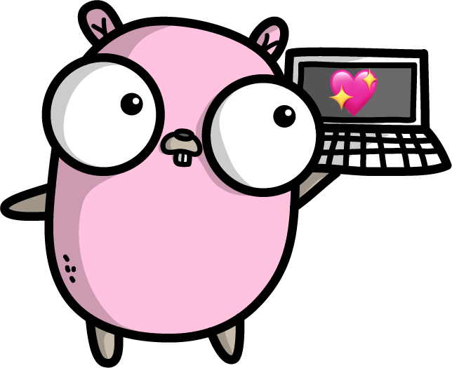

Designing Command-Line Tools People Love

Carolyn Van Slyck
Senior Software Engineer at Microsoft
Often CLIs aren't designed,
functionality is added through happenstance
Design Goals
- Predictable
- Task oriented commands
- Friendly to both humans and scripts
- Creates an SDK as a side-effect
- New contributor launchpad
Introductions
Docker Version Manager

dep


Porter

Recommendations
Command Design
Pick a Grammar
Understand precedent in your ecosystem
- svcat follows kubectl
- dvm followed nvm (for a while)
- dep doesn't follow glide, npm, etc
$ emote list
NAME VALUE
shrug ¯\_(ツ)_/¯
tableflip (╯°□°）╯︵ ┻━┻
monocle ಠ_ರೃ
$ emote shrug
¯\_(ツ)_/¯ copied to the clipboard
$ emote add emoticon gopher --value ʕ •ᴥ•ʔ
gopher added to the big list 'o emoji
$ emote delete emoticon foo
blerg is no more
$ emote add repo efunk --url https://carolynvs.com/funky-emoticons.json
added 100 emoticons
$ emote list repos
NAME URL SIZE
efunk https://carolynvs.com/funky-emoticons.json 100
Exception: Implicit Noun or Verb
Depends on your judgement about the domain
- emote list
- emote add EMOTICON_NAME
- emote EMOTICON_NAME
Make tasks easier,
don't simply wrap an API
Frameworks
- spf13/cobra - Commands and Flags
- spf13/viper - Configuration Management
- spf13/afero - File System Abstraction
Thank you, Steve Francia! 💖
Example: Initialize Cobra CLI
package main
imports "github.com/spf13/cobra"
func newRootCmd(args []string) *cobra.Command {
cmd := &cobra.Command{
Use: "helm",
Short: "The Helm package manager for Kubernetes.",
}
out := cmd.OutOrStdout()
cmd.AddCommand(
newInstallCmd(nil, out), // helm install
newListCmd(nil, out), // helm list
)
return cmd
}
func main() {
cmd := newRootCmd(os.Args[1:])
if err := cmd.Execute(); err != nil {
os.Exit(1)
}
}
From helm
Example: viper
cmd.Flags().StringVarP(&installCmd.path, "plugins-path", "p", "",
"The installation path. Defaults to KUBECTL_PLUGINS_PATH")
cxt.Viper.BindEnv("plugins-path", EnvPluginPath)
From svcat plugin install
Example: afero
ioutil.ReadFile("/tmp/gopherfarts.txt")
// vs.
var fs = afero.NewOsFs()
fs.ReadFile("/tmp/gopherfarts.txt")
Package Structure
- cmd/emote is the CLI's wiring
- pkg/emote is CLI's SDK or libray
Example: Logic in Main Package
package main
func (cmd *ensureCommand) Run(ctx *dep.Ctx, args []string) error {
if cmd.examples {
ctx.Err.Println(strings.TrimSpace(ensureExamples))
return nil
}
if err := cmd.validateFlags(); err != nil {
return err
}
p, err := ctx.LoadProject()
if err != nil {
return err
}
sm, err := ctx.SourceManager()
if err != nil {
return err
}
sm.UseDefaultSignalHandling()
...
From dep ensure
Example: Wiring in Main Package
package main
import (
"github.com/deislabs/porter/pkg/porter"
"github.com/deislabs/porter/pkg/printer"
"github.com/spf13/cobra"
)
cmd := &cobra.Command{
Use: "mixins",
Short: "List installed mixins",
PreRunE: func(cmd *cobra.Command, args []string) error {
var err error
opts.format, err = printer.ParseFormat(opts.rawFormat)
return err
},
RunE: func(cmd *cobra.Command, args []string) error {
o := printer.PrintOptions{ Format: opts.format }
return p.PrintMixins(o)
},
}
From porter list mixins
Command Composition
Dependency Injection
Publishing
References
Thank you

Gopher artwork by Ashley McNamara
licensed under the Creative Commons Attribution-NonCommercial-ShareAlike 4.0 License